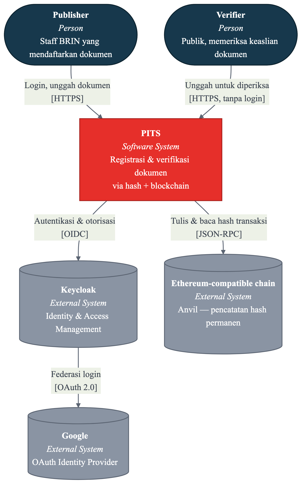
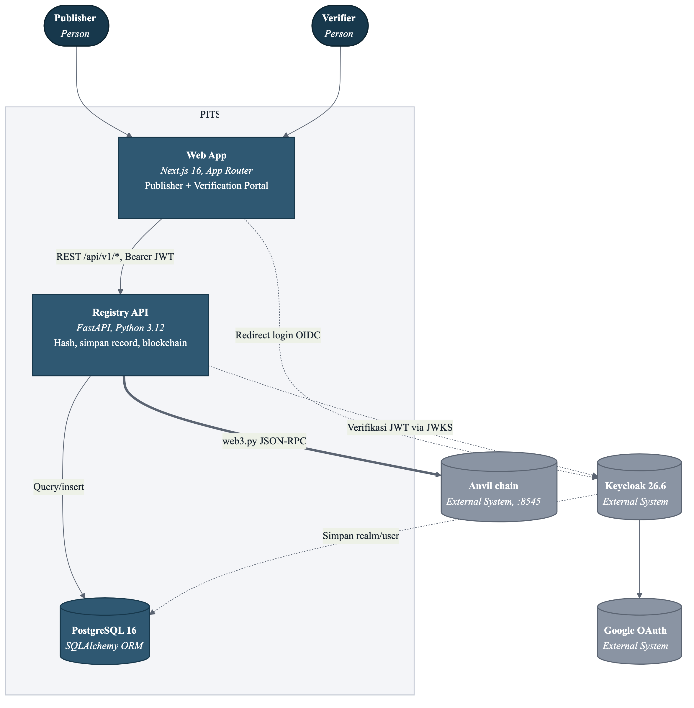
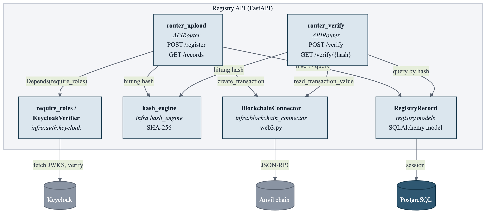
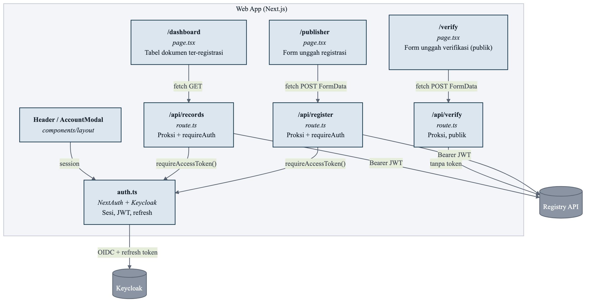
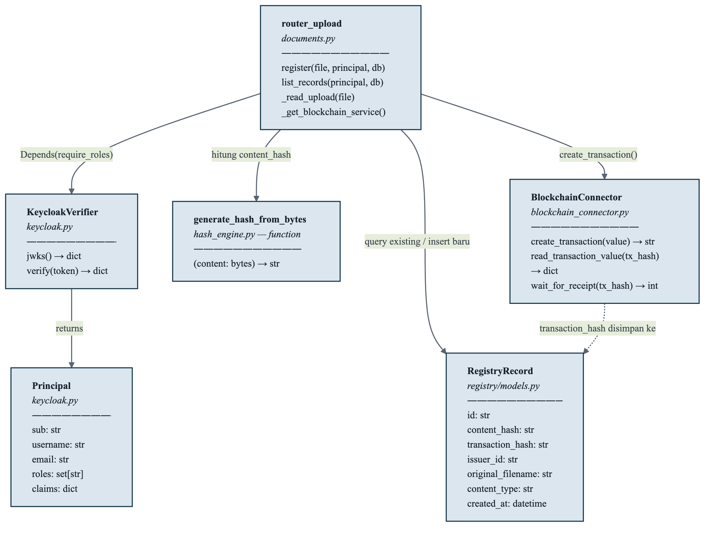

Siapa memakai PITS, dan sistem apa saja di sekitarnya
Dua aktor manusia (satu wajib login, satu tidak), satu sistem inti, dan tiga sistem eksternal yang PITS percaya untuk identitas dan pencatatan permanen.
mermaid — flowchart (dirender ke PNG untuk kejelasan)

Publisher
- Wajib login (Keycloak native atau Google)
- Role realm
publisher— sekarang default role, otomatis didapat siapa pun yang login lewat Google - Bisa mendaftarkan dokumen & melihat dashboard registrasi
Verifier
- Tidak perlu akun sama sekali
- Cuma unggah 1 file PDF, dapat status cocok/tidak dengan catatan resmi
- Rute publik:
/verifydi frontend,POST /api/v1/verifydi backend
31337, bukan mainnet. Konteksnya tetap benar secara arsitektur (PITS memang bicara ke sebuah node RPC bergaya Ethereum), tapi node itu belum terhubung ke jaringan publik manapun.
Lima unit yang benar-benar di-deploy terpisah
Tiap kotak di sini adalah proses/container Docker sendiri, bisa di-deploy dan di-scale independen. Frontend dan backend berbicara lewat REST biasa, bukan lewat panggilan langsung.
mermaid — flowchart (dirender ke PNG untuk kejelasan)

| Container | Teknologi | Port internal | Peran |
|---|---|---|---|
| Web App | Next.js 16 + NextAuth | 3000 | UI publisher/verifier, proksi ber-auth ke Registry API |
| Registry API | FastAPI + web3.py | 41012 | Hash SHA-256, tulis/baca blockchain, CRUD record |
| Keycloak | Keycloak 26.6 (Quarkus) | 8080 | Realm nextjs-kc, login native + Google IdP |
| PostgreSQL | Postgres 16-alpine | 5432 | DB tdb — dipakai backend & Keycloak |
| Anvil | Foundry (ghcr.io) | 8545 | Chain lokal, chain ID 31337, tanpa persist state |
Di dalam Registry API dan Web App
Zoom satu tingkat ke dalam dua container aplikasi (bukan Keycloak/Postgres/Anvil, yang off-the-shelf). Modul yang ditandai abu-abu di source ada di repo tapi tidak dipanggil — cek §Catatan di bawah.
mermaid — flowchart, Registry API (dirender ke PNG)

mermaid — flowchart, Web App (dirender ke PNG)

api/v1/exports.py, inventor.py, status.py, verification.py, dan services/{etherum,github,graphdb,x}_connector.py ada di repo tapi tidak di-include_router-kan di main.py — cuma documents dan metrics yang aktif. Diagram di atas cuma menampilkan yang benar-benar berjalan.
Alur POST /register sampai ke kelas & fungsi
Level paling detail — kelas, method, dan tipe data asli yang terlibat saat satu dokumen didaftarkan, diambil langsung dari documents.py, blockchain_connector.py, keycloak.py, dan registry/models.py.
mermaid — flowchart, class-level (dirender ke PNG)

Urutan eksekusi register()
require_roles("publisher")— tolak 401/403 kalau token tidak valid/tanpa role_read_upload()— baca file, tolak kosong/>MAX_UPLOAD_BYTESgenerate_hash_from_bytes()— SHA-256 dari isi file- Cek duplikat by
content_hash— kalau sudah ada, return existing (idempotent) BlockchainConnector.create_transaction()laluwait_for_receipt()- Simpan
RegistryRecordbaru, commit
Bagaimana hash "tercatat" on-chain
- Bukan smart contract — transaksi biasa ke alamat sendiri
- Hash ditaruh di field
datatransaksi, prefixVALUE: - Verifikasi baca ulang
datalewatread_transaction_value(), cocokkan kecontent_hashdi DB - Makanya perlu 2 sumber cocok: record Postgres dan transaksi on-chain
| Method | Path | Auth | Fungsi handler |
|---|---|---|---|
| POST | /api/v1/register | publisher | documents.register() |
| GET | /api/v1/records | publisher | documents.list_records() |
| POST | /api/v1/verify | publik | documents.verify_full() |
| GET | /api/v1/verify/{hash} | publik | documents.verify_by_hash() |